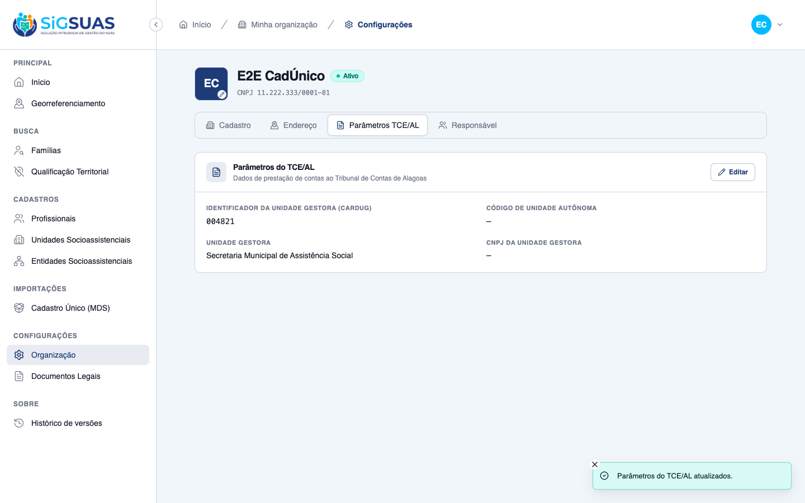
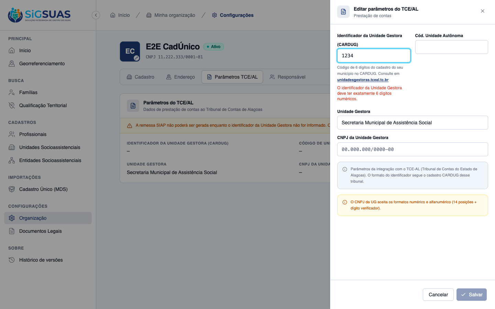
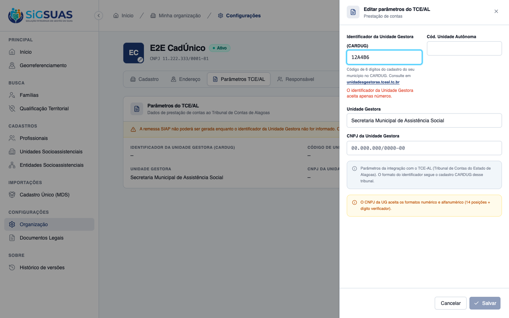
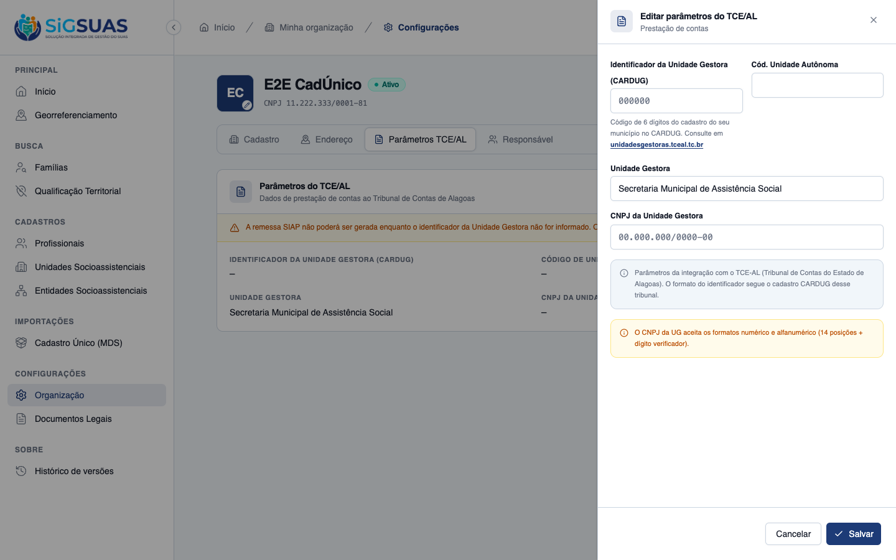
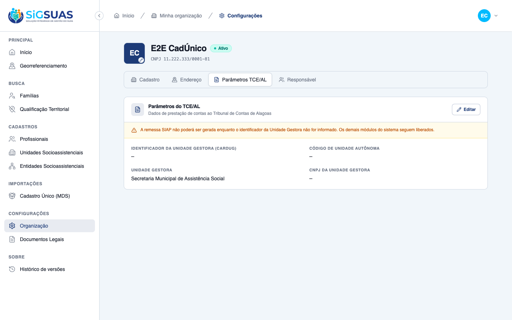
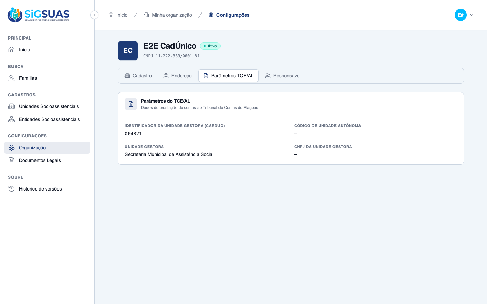
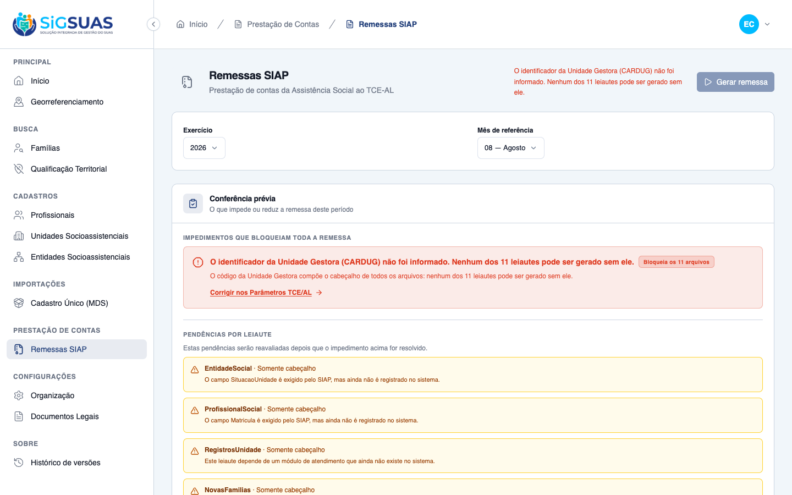
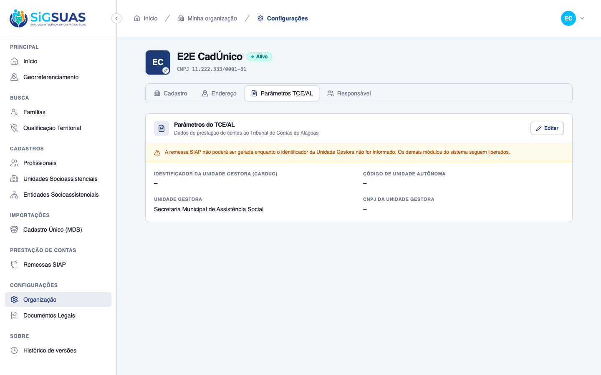
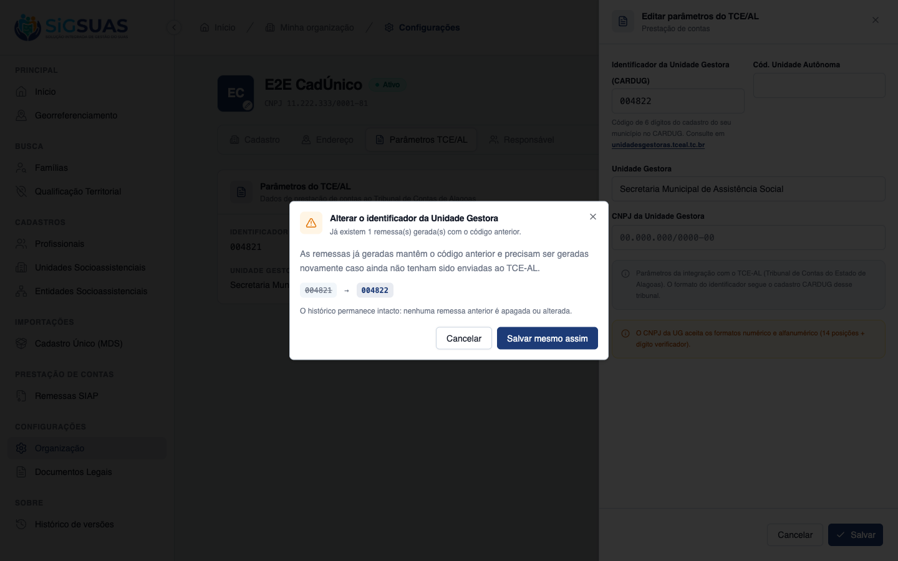
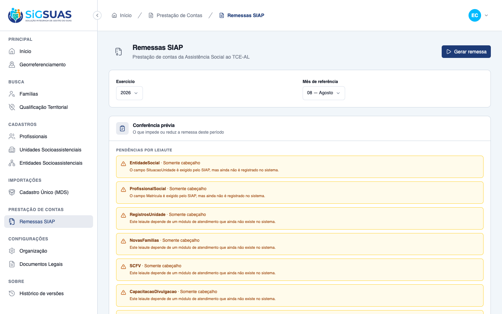

Relatório de Critérios de Aceite — HU #10367 (US-SIAP-09)
Resumo
11 critérios avaliados, 11 atendidos e evidenciados — nenhum reprovado, nenhum pendente. CA01, CA02, CA03, CA04, CA04b e CA05 foram dirigidos na tela de Configurações; CA06 e CA08, que na entrega anterior figuravam como contrato por dependerem de funcionalidade inexistente, agora estão implementados e demonstrados no app real: a conferência prévia da remessa separa visualmente o impedimento que bloqueia toda a remessa das pendências por leiaute, e a alteração do identificador com remessa já gerada exige confirmação do Master. CA07, CA09 e CA10 são cobertos pela suíte automatizada. 11 prints e 87 testes Pest (296 asserções, 100% verdes).
| CA | Critério | Status |
|---|---|---|
| CA01 | Informar o identificador (happy path) | ATENDIDO · navegador + automatizado |
| CA02 | Recusa por quantidade de dígitos | ATENDIDO · navegador + automatizado |
| CA03 | Recusa por caractere não numérico | ATENDIDO · navegador + automatizado |
| CA04 | Orientação de onde consultar o código | ATENDIDO · navegador |
| CA04b | Salvar os parâmetros sem o identificador é permitido, com aviso | ATENDIDO · navegador + automatizado |
| CA05 | Operacional não edita | ATENDIDO · navegador + automatizado |
| CA06 | Bloqueio da geração de remessa sem o identificador | ATENDIDO · navegador + automatizado |
| CA07 | Ausência do identificador não bloqueia o resto do sistema | ATENDIDO · automatizado |
| CA08 | Aviso ao alterar com remessa já gerada | ATENDIDO · navegador + automatizado |
| CA09 | Alteração auditada | ATENDIDO · automatizado |
| CA10 | Isolamento multi-tenant (invariante regressiva) | ATENDIDO · automatizado |
CA01 — Informar o identificador (happy path) ATENDIDO · navegador + automatizado
Critério (Gherkin): Dado que sou Master e estou na tela Organização, no bloco de parâmetros TCE/AL Quando eu informar o identificador da Unidade Gestora com 6 dígitos numéricos e salvar Então os parâmetros são salvos E o identificador aparece no bloco de parâmetros TCE/AL.
Como foi testado: Login como Master (CPF 52998224725) → Configurações → aba Parâmetros TCE/AL → Editar → informar 004821 → Salvar.
- Os parâmetros são salvos (HTTP 200) e o drawer fecha.
- O card exibe o identificador 004821 no bloco de parâmetros TCE/AL.
- O aviso de bloqueio da remessa SIAP deixa de ser exibido (siap_readiness.ready passa a true).
- Confirmação no banco: tenant_tce_parameters.cardug_identifier = '004821'.
- Observação: até esta entrega o botão Editar não renderizava (v-if preso em `&& false` no TceParametersCard.vue), o que tornava este critério inexequível pela tela.

CA02 — Recusa por quantidade de dígitos ATENDIDO · navegador + automatizado
Critério (Gherkin): Dado que estou editando os parâmetros TCE/AL Quando eu informar um identificador com 4 dígitos e tentar salvar Então os parâmetros não são salvos E o sistema indica que o identificador da Unidade Gestora precisa ter exatamente 6 dígitos numéricos.
Como foi testado: No drawer de edição, informar 1234 → Salvar.
- Os parâmetros não são salvos.
- A tela indica: “O identificador da Unidade Gestora deve ter exatamente 6 dígitos numéricos.”
- Confirmação no banco: cardug_identifier permanece NULL após a tentativa.
- Backend cobre os dois lados do limite (1234, 12345 e 1234567 → 422), inclusive na rota do Super Admin.

CA03 — Recusa por caractere não numérico ATENDIDO · navegador + automatizado
Critério (Gherkin): Dado que estou editando os parâmetros TCE/AL Quando eu informar um identificador contendo letra ou pontuação e tentar salvar Então os parâmetros não são salvos E o sistema indica que o identificador aceita apenas números.
Como foi testado: No drawer de edição, informar 12A4B6 → Salvar.
- Os parâmetros não são salvos.
- A tela indica: “O identificador da Unidade Gestora aceita apenas números.” — mensagem distinta da de tamanho, como o PO separou nos critérios.
- O valor digitado permanece 12A4B6 no campo: não é sanitizado em silêncio para 1246 (verificado por leitura do valor do input).
- Backend recusa igualmente letra, pontuação e espaço interno (12A4B6, 123-56, 12 456 → 422), sem gravar nem o valor original nem uma versão limpa.

CA04 — Orientação de onde consultar o código ATENDIDO · navegador
Critério (Gherkin): Dado que estou no bloco de parâmetros TCE/AL Quando eu olhar o campo do identificador da Unidade Gestora Então vejo a indicação de que o código é o do cadastro do município no CARDUG, com o endereço de consulta do TCE-AL E o bloco identifica que esses parâmetros são da integração com o TCE-AL, e não parâmetros genéricos do sistema.
Como foi testado: Abrir o drawer Editar parâmetros do TCE/AL e observar o campo do identificador.
- O campo é rotulado “Identificador da Unidade Gestora (CARDUG)”.
- Hint abaixo do campo: “Código de 6 dígitos do cadastro do seu município no CARDUG. Consulte em unidadesgestoras.tceal.tc.br”, com link para http://unidadesgestoras.tceal.tc.br/ (target=_blank, rel=noopener noreferrer).
- Callout do bloco: “Parâmetros da integração com o TCE-AL (Tribunal de Contas do Estado de Alagoas). O formato do identificador segue o cadastro CARDUG desse tribunal.” — atende a RN03 ao não apresentar a regra como universal do sistema.

CA04b — Salvar os parâmetros sem o identificador é permitido, com aviso ATENDIDO · navegador + automatizado
Critério (Gherkin): Dado que ainda não tenho o código da minha Unidade Gestora em mãos Quando eu salvar os parâmetros TCE/AL deixando o identificador vazio Então os parâmetros são salvos E a tela avisa que a remessa SIAP não poderá ser gerada enquanto o identificador não for informado.
Como foi testado: Com o identificador vazio no banco e os demais parâmetros preenchidos (Unidade Gestora informada), abrir a aba Parâmetros TCE/AL.
- Os parâmetros são salvos normalmente com o identificador vazio (HTTP 200, cardug_identifier = null).
- O card exibe o aviso: “A remessa SIAP não poderá ser gerada enquanto o identificador da Unidade Gestora não for informado. Os demais módulos do sistema seguem liberados.”
- O aviso não bloqueia o salvamento nem a navegação — é informativo (RN02).
- A resposta da API traz siap_readiness = { ready: false, blocking_reason: 'cardug_identifier_missing', has_generated_remittances: false }.

CA05 — Operacional não edita ATENDIDO · navegador + automatizado
Critério (Gherkin): Dado que sou Operacional do Tenant Quando eu abrir a tela Organização Então visualizo o identificador da Unidade Gestora E não tenho a ação de editar os parâmetros TCE/AL.
Como foi testado: Logout do Master → login como Operacional do Tenant (CPF 39053344705, papel operador) → Configurações → aba Parâmetros TCE/AL.
- O Operacional visualiza o identificador 004821 e os demais parâmetros.
- O botão Editar não é renderizado (ausência, não apenas desabilitado).
- Defesa em profundidade: PUT direto em /api/client/tenant-tce-parameters com o token do Operacional retorna 403 “Acesso negado.”
- Gate corrigido nesta entrega: o front checava tenant-settings.update (outro recurso); passou a checar tenant-tce-parameters.update, a permissão que o backend exige.

CA06 — Bloqueio da geração de remessa sem o identificador ATENDIDO · navegador + automatizado
Critério (Gherkin): Dado que os parâmetros TCE/AL da minha organização estão sem o identificador da Unidade Gestora Quando eu tentar gerar qualquer remessa SIAP Então a remessa não é gerada E a conferência prévia apresenta essa pendência em destaque, separada das pendências por leiaute, indicando que bloqueia toda a remessa.
Como foi testado: Com os parâmetros TCE/AL sem o identificador, abrir Prestação de Contas → Remessas SIAP e observar a conferência prévia; em seguida tentar gerar a remessa, inclusive por chamada direta à API.
- O botão “Gerar remessa” aparece desabilitado, com o motivo escrito ao lado: “O identificador da Unidade Gestora (CARDUG) não foi informado. Nenhum dos 11 leiautes pode ser gerado sem ele.”
- A conferência prévia mostra o bloco “Impedimentos que bloqueiam toda a remessa” em destaque, no topo, com o selo “Bloqueia os 11 arquivos”.
- As pendências por leiaute aparecem em bloco separado, logo abaixo — EntidadeSocial, ProfissionalSocial, RegistrosUnidade e demais leiautes sem fonte de dados, cada um nomeando o campo que falta.
- Chamada direta a POST /api/client/siap-remittances responde 422 e a remessa não é criada: o bloqueio não depende da interface.
- O impedimento oferece atalho “Corrigir nos Parâmetros TCE/AL”, que leva direto à aba certa (/app/configuracoes?tab=tce), já selecionada.
- Informado o identificador 004821, o impedimento some, o botão habilita e a remessa é gerada de verdade: 11 leiautes no pacote .zip, cada arquivo com o cabeçalho Codigo/Exercicio/Mes.



CA07 — Ausência do identificador não bloqueia o resto do sistema ATENDIDO · automatizado
Critério (Gherkin): Dado que os parâmetros TCE/AL da minha organização estão sem o identificador da Unidade Gestora Quando eu usar os demais módulos do sistema (unidades, entidades, profissionais, prontuário) Então nenhuma dessas operações é bloqueada por causa do identificador ausente.
Como foi testado: Teste de não-regressão em tests/Feature/Api/TenantTceParameterSiapReadinessTest.php: com cardug_identifier = null, exercitar um módulo operacional do tenant.
- Com o identificador ausente, GET /api/client/social-units responde 200 normalmente.
- Nenhum middleware, gate ou Policy novo foi criado nesta HU — a ausência do identificador não é gate de sistema (RN10).
- A mesma requisição de parâmetros TCE/AL segue respondendo 200, apenas com readiness false.
Evidência por cobertura automatizada — ver Anexo.
CA08 — Aviso ao alterar com remessa já gerada ATENDIDO · navegador + automatizado
Critério (Gherkin): Dado que existe remessa gerada para a referência 07/2026 e que sou Master Quando eu alterar o identificador da Unidade Gestora Então o sistema avisa que as remessas já geradas mantêm o código anterior e precisam ser geradas novamente caso ainda não tenham sido enviadas E, ao confirmar, o novo identificador é salvo e as remessas anteriores permanecem no histórico como estavam.
Como foi testado: Com a remessa de 08/2026 já gerada com o identificador 004821, alterar o identificador para 004822 em Configurações → Parâmetros TCE/AL.
- O sistema abre a confirmação: “Já existem 1 remessa(s) gerada(s) com o código anterior” e “As remessas já geradas mantêm o código anterior e precisam ser geradas novamente caso ainda não tenham sido enviadas ao TCE-AL.”
- Enquanto o Master não confirma, nada é salvo: o identificador permanece 004821 no banco.
- Ao confirmar, o novo identificador (004822) é gravado.
- A remessa anterior permanece intacta: mesmo identificador 004821, mesmo arquivo e mesmo checksum de conteúdo antes e depois da alteração.
- No histórico, a remessa antiga passa a exibir a marca “identificador anterior”, que continua visível depois que o aviso da tela já sumiu.
- Decisão de negócio provisória registrada: o aviso dispara para qualquer remessa gerada, sem distinguir as já enviadas — o envio acontece no portal do TCE-AL, fora do sistema, e o SigSUAS não tem como saber.


CA09 — Alteração auditada ATENDIDO · automatizado
Critério (Gherkin): Dado que alterei o identificador da Unidade Gestora Quando eu consultar a trilha de auditoria da organização Então a alteração consta registrada, com o autor e a data.
Como foi testado: Teste em tests/Feature/Api/TenantTceParameterControllerTest.php: após o PUT, inspecionar a trilha em activity_log.
- Registro gravado com log_name 'tenant', subject TenantTceParameter, causer_id do autor e created_at da alteração.
- attribute_changes preserva o valor novo ('004821') e o anterior (null) do identificador.
- properties carrega o tenant_id, injetado pelo Model Activity customizado do projeto.
- Comportamento já existia via trait LogsActivity; esta entrega o fixou com teste de regressão.
Evidência por cobertura automatizada — ver Anexo.
CA10 — Isolamento multi-tenant (invariante regressiva) ATENDIDO · automatizado
Critério (Gherkin): Dado que sou Master do tenant A Quando eu salvar o identificador enviando tenant_id do tenant B no corpo Então o valor é gravado apenas no tenant A (tenant vem do contexto, nunca do payload).
Como foi testado: Teste em tests/Feature/Api/TenantTceParameterControllerTest.php: PUT com tenant_id de outro tenant no corpo da requisição.
- Nada é gravado no tenant alvo do payload — nem no tenant legítimo: a requisição é recusada com 403 (error_code tenant_access_denied) antes de chegar ao Controller.
- O destino da escrita continua vindo exclusivamente do contexto (header X-Tenant-UUID), como exige a RN09.
- Achado registrado para acompanhamento: o Global Scope de BelongsToTenant resolve o tenant corrente por request->input('tenant_id'), que lê do corpo/query — hoje o resultado fecha (403), mas a resolução do escopo por dado do cliente é frágil e merece tratamento próprio, fora desta HU.
Evidência por cobertura automatizada — ver Anexo.
Observações e ressalvas
Decisão de negócio provisória — o aviso de alteração não distingue remessa já enviada (CA08)
Quando o Master altera o identificador da Unidade Gestora e já existe remessa gerada, o sistema exige confirmação avisando que as remessas anteriores mantêm o código antigo e precisam ser geradas novamente caso ainda não tenham sido enviadas.
Na prática, o aviso dispara para qualquer remessa já gerada, sem separar as que já foram enviadas ao Tribunal das que não foram. A razão é que o envio acontece no portal do TCE-AL, fora do sistema: o SigSUAS não tem como saber se o pacote já foi entregue. O texto do critério exige o aviso, e o aviso é dado — mas fica registrado que a distinção pedida na redação do CA depende de uma informação que o sistema não possui hoje. Se a área de negócio quiser essa separação, será preciso decidir como o município registra o envio.
Achado técnico para acompanhamento — fora do escopo desta HU (CA10)
Ao verificar o isolamento entre organizações, constatou-se que o mecanismo global que restringe os dados à organização ativa resolve qual é essa organização a partir de um dado que vem na própria requisição do cliente.
O resultado hoje está correto: a tentativa de gravar o identificador em outra organização é recusada antes de chegar ao processamento, e o destino da escrita continua vindo exclusivamente do contexto autenticado. Ainda assim, resolver o escopo a partir de dado enviado pelo cliente é frágil e merece tratamento próprio, em chamado separado — não é alteração que caiba nesta entrega.
Cobertura adicional além dos critérios do chamado
Além dos nove critérios pedidos no chamado, o dossiê traz um décimo (CA10), de isolamento entre organizações, que não consta do texto original da história. Ele foi incluído como invariante de regressão, por ser o identificador um dado que representa o município perante o Tribunal. Não substitui nem altera nenhum critério aprovado.
Anexo — Cobertura automatizada (Pest — TenantTceParameter, ValidCardugIdentifier, SiapRemittance, SiapPreCheck, SiapDomainMap)
PASS Tests\Unit\Models\TenantTceParameterTest ✓ it has correct fillable attributes 0.33s ✓ it uses the expected traits 0.01s ✓ it defines tenant relationship 0.01s ✓ it normalizes managing_unit_cnpj preserving the alphanumeric format… 0.01s ✓ it generates a uuid via factory 0.05s PASS Tests\Unit\Rules\ValidCardugIdentifierTest ✓ it accepts exactly six digits (RN01/CA01) 0.03s ✓ it accepts six zeros — the format rule is about shape, not value 0.01s ✓ it rejects fewer than six digits with the length message (CA02) wit… 0.01s ✓ it rejects fewer than six digits with the length message (CA02) wit… 0.01s ✓ it rejects fewer than six digits with the length message (CA02) wit… 0.01s ✓ it rejects more than six digits with the length message (CA02) 0.01s ✓ it rejects non numeric characters with its own message (CA03) with… 0.01s ✓ it rejects non numeric characters with its own message (CA03) with… 0.01s ✓ it rejects non numeric characters with its own message (CA03) with… 0.01s ✓ it rejects non numeric characters with its own message (CA03) with… 0.01s ✓ it rejects non numeric characters with its own message (CA03) with… 0.01s ✓ it rejects non numeric characters with its own message (CA03) with… 0.01s ✓ it rejects a non string value 0.01s ✓ it exposes the format as a single source of truth (RN03/D01) 0.01s PASS Tests\Unit\Services\Siap\SiapDomainMapTest ✓ it inverts Parda and Amarela between the eSUAS and SIAP scales 0.01s ✓ it keeps the race colors that coincide in both scales ✓ it returns null for a race color without counterpart ✓ it maps social unit types to the SIAP classification ✓ it refuses to translate a unit status the SIAP does not define ✓ it only translates the entity status that has a safe counterpart ✓ it collapses the four SUAS participation types into the three of SIAP ✓ it maps kinship to the family position scale ✓ it leaves the ambiguous education level unmapped ✓ it maps booleans to the SIM/NAO pair ✓ it strips the zero padding only for the auxiliary tables ✓ it refuses a numeric value with a size different from the exact one ✓ it never sanitizes a non numeric value to make it fit ✓ it flags truncation instead of cutting text in silence ✓ it formats dates in ISO and decimals with two places ✓ it registers exactly the 11 layouts of the SIAP social assistance section ✓ it puts UnidadeSocial first, since 8 other layouts depend on it ✓ it names every file after its layout, as the Manual requires PASS Tests\Feature\Api\SiapRemittanceGenerationTest ✓ it refuses the generation when the identifier is missing (CA06) 0.07s ✓ it refuses the generation for a legacy identifier outside the TCE-A… 0.02s ✓ it creates the remittance and dispatches the job when the identifie… 0.05s ✓ it generates a zip with all 11 layouts, including the ones without… 0.05s ✓ it records the layout outcome of a layout without movement 0.10s ✓ it re-evaluates the block inside the job (TOCTOU) 0.04s ✓ it refuses a second generation while one is still running 0.04s ✓ it never lists or downloads a remittance from another tenant 0.04s ✓ it refuses the download while the remittance is not completed 0.07s PASS Tests\Feature\Api\SiapRemittancePreCheckTest ✓ it separates the blocking identifier pendency from the per-layout o… 0.03s ✓ it states that the identifier pendency blocks the entire remittance… 0.02s ✓ it still lists every layout while the remittance is blocked (CA06) 0.03s ✓ it marks per-layout pendencies as non blocking 0.02s ✓ it reports a required field that has no source in the system 0.05s ✓ it does not persist anything during the pre-check 0.03s ✓ it releases the generation when the identifier is valid 0.02s ✓ it counts records only from the active tenant 0.03s ✓ it rejects an invalid reference month 0.03s ✓ it accepts the special reference months 13 and 14 with (13) 0.02s ✓ it accepts the special reference months 13 and 14 with (14) 0.02s PASS Tests\Feature\Api\TenantTceParameterControllerTest ✓ it shows TCE parameters (creates if not exists) 0.03s ✓ it updates TCE parameters with a valid alphanumeric UG CNPJ (RN07/R… 0.02s ✓ it saves the managing unit identifier with exactly six digits (CA01… 0.02s ✓ it rejects an identifier with the wrong number of digits (RN01/CA02… 0.02s ✓ it rejects an identifier with the wrong number of digits (RN01/CA02… 0.02s ✓ it rejects an identifier with the wrong number of digits (RN01/CA02… 0.02s ✓ it rejects an identifier with non numeric characters and does NOT s… 0.05s ✓ it rejects an identifier with non numeric characters and does NOT s… 0.04s ✓ it rejects an identifier with non numeric characters and does NOT s… 0.02s ✓ it trims the identifier before validating 0.02s ✓ it saves the TCE parameters without the identifier and warns about… 0.02s ✓ it never writes to another tenant when tenant_id comes in the paylo… 0.02s ✓ it records the identifier change in the audit trail with author and… 0.02s ✓ it rejects an invalid UG CNPJ (RN15) 0.02s ✓ it forbids the Operacional from updating TCE parameters (RN03) 0.02s ✓ it manager shows TCE parameters of any tenant by uuid (no binding) 0.02s ✓ it manager updates TCE parameters of any tenant by uuid 0.02s ✓ it applies the same identifier format rule on the manager variant (… 0.02s ✓ it forbids a manager without permission from updating TCE by uuid 0.02s PASS Tests\Feature\Api\TenantTceParameterIdentifierChangeTest ✓ it does not ask for confirmation while no remittance was generated… 0.03s ✓ it warns the Master when a remittance was already generated (CA08) 0.02s ✓ it saves the new identifier once the Master confirms (CA08) 0.02s ✓ it keeps previously generated remittances untouched after the chang… 0.03s ✓ it marks old remittances as generated with the previous identifier… 0.03s ✓ it does not ask for confirmation when the identifier does not chang… 0.02s ✓ it exposes has_generated_remittances reflecting reality (CA08) 0.03s ✓ it does not leak has_generated_remittances across tenants (CA08 + i… 0.03s PASS Tests\Feature\Api\TenantTceParameterSiapReadinessTest ✓ it does not block other modules when the identifier is missing (RN1… 0.03s ✓ it reports readiness as true once the identifier is in the TCE-AL f… 0.02s ✓ it reports readiness as false for a legacy value outside the TCE-AL… 0.03s Tests: 87 passed (296 assertions) Duration: 2.55s